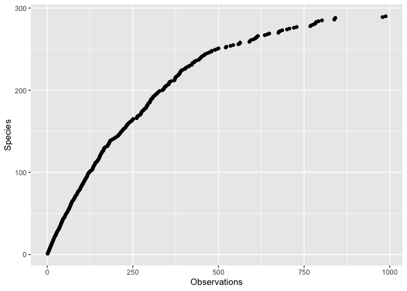
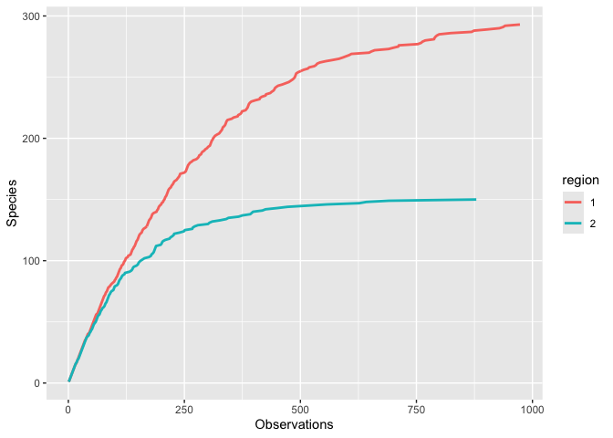

ggspeciesaccumulation provides a ggplot2 stat for creating species accumulation curves on tidy dataframes. It works on occurrence data from places like GBIF and iNaturalist.
Installation
You can install the development version of ggspeciesaccumulation like this:
# install.packages("pak")
pak::pak("pandionlabs/ggspeciesaccumulation")Example
Prepare a sample dataframe like this:
library(ggspeciesaccumulation)
df <-
tibble::tibble(
speciesKey = runif(1000, 0, 300) |>
round()
)
Then use stat_species_acc() like this. Remember to specify the species_key aesthetic. species_key should be the column in your dataframe that denotes which species each observation record is.
ggplot2::ggplot(df, ggplot2::aes(species_key = speciesKey)) +
stat_species_acc() +
ggplot2::labs(y = "Species", x = "Observations")
You can use the normal ggplot aesthetics too!
df <-
tibble::tibble(
speciesKey = c(
runif(1000, 0, 300) |> round(),
runif(1000, 0, 150) |> round()
),
region = c(
rep.int(1, 1000) |> factor(),
rep.int(2, 1000) |> factor()
)
)
ggplot2::ggplot(df, ggplot2::aes(species_key = speciesKey, colour = region)) +
stat_species_acc(geom = "smooth") +
ggplot2::labs(y = "Species", x = "Observations")
Code of Conduct
Please note that the ggspeciesaccumulation project is released with a Contributor Code of Conduct. By contributing to this project, you agree to abide by its terms.